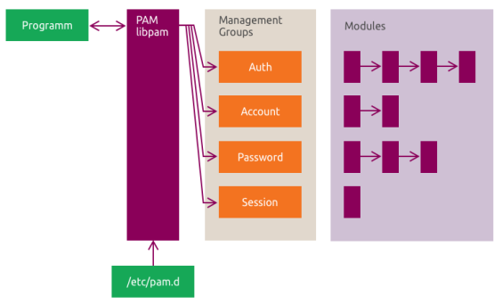

Security¶
This chapter covers PAM, ACLs, AppArmor, UFW, and Ubuntu Pro services.
In this chapter, you will:
- explain how PAM handles authentication and service-level access control
- review and manage POSIX ACLs
- understand AppArmor profile modes and profile management
- configure basic host firewall rules with UFW
- review Ubuntu Pro services such as ESM, USG, and Livepatch
Warning
These topics can affect logins, access control, and network access. Test carefully and avoid applying changes blindly on systems with important data.
For a broader overview, see the Ubuntu security documentation: https://documentation.ubuntu.com/server/explanation/intro-to/security/
9.1 Pluggable Authentication Modules (PAM)¶
PAM is Ubuntu's authentication framework. Programs such as login, sudo, su, and sshd ask PAM to handle authentication, account checks, password policy, and session setup.
The main idea is simple: the application asks, and PAM decides based on its configuration.
Note
Ubuntu 24.04 LTS also introduced authd for OpenID Connect (OIDC) integration with cloud identity providers. It complements PAM, but PAM is still the core local authentication framework described here.
PAM Library¶
Think of PAM as four separate jobs:
- Account management: is this account allowed to use the service?
- Authentication management: is this user really who they claim to be?
- Password management: how are passwords checked or changed?
- Session management: what should happen when a session starts or ends?
On Ubuntu, PAM configuration usually lives in /etc/pam.d/. When that directory exists, PAM ignores /etc/pam.conf.
9.1.1 Common PAM Modules¶
Do not try to memorize every module name. Remember which job each module belongs to.
| Category | Example modules | Purpose |
|---|---|---|
| Authentication | pam_unix.so, pam_ldap.so, pam_fprintd.so |
Verify identity |
| Account management | pam_access.so, pam_time.so, pam_nologin.so |
Allow or deny account use |
| Password management | pam_pwquality.so, pam_pwhistory.so |
Enforce password rules |
| Session management | pam_mkhomedir.so, pam_systemd.so |
Prepare and track sessions |
Note
PAM modules are typically stored under /lib/*/security/, depending on the system architecture.
9.1.2 PAM Configuration¶
Each PAM rule is one line with three parts:
- a function type such as
auth,account,password, orsession - a control argument such as
required,requisite,sufficient, or a bracketed rule - a module such as
pam_unix.so
Example PAM configuration:
# Authenticate the user.
auth required pam_unix.so
# Ensure the account is still valid.
account required pam_unix.so
# Enforce password policy, then update the password.
password required pam_cracklib.so retry=3 minlen=6 difok=3
password required pam_unix.so use_authtok nullok md5
# Start the user session.
session required pam_unix.so
A useful way to read auth required pam_unix.so is:
auth: this line is part of user authenticationrequired: this rule must succeed for the overall result to succeedpam_unix.so: use the standard local Unix authentication module
9.1.3 Common Settings¶
Ubuntu avoids repeating the same PAM rules in every service file. Instead, many services include shared policy files.
| File | Purpose |
|---|---|
/etc/pam.d/common-auth |
Shared authentication logic |
/etc/pam.d/common-account |
Shared account validation |
/etc/pam.d/common-password |
Shared password policy |
/etc/pam.d/common-session |
Shared interactive session setup |
/etc/pam.d/common-session-noninteractive |
Shared non-interactive session setup |
Example from /etc/pam.d/common-auth:
# /etc/pam.d/common-auth - authentication settings common to all services
auth [success=1 default=ignore] pam_unix.so nullok_secure
auth requisite pam_deny.so
auth required pam_permit.so
auth optional pam_cap.so
A service can pull those shared rules in with @include:
auth required pam_shells.so
auth sufficient pam_rootok.so
@include common-auth
@include common-account
@include common-session
9.1.4 PAM Architecture¶
The flow to remember is: application -> libpam -> /etc/pam.d/ -> PAM modules.
Applications built with PAM support call libpam. PAM then reads the matching rules in /etc/pam.d/ and loads the required modules.

Common PAM-related packages include:
libpam0g: core PAM librarylibpam-modules: standard PAM moduleslibpam-modules-bin: helper binarieslibpam-runtime: runtime support and common configurationlibpam-systemd: session integration with systemdlibpam-doc: documentation
9.1.5 PAM Modules Discovery¶
These commands help you identify where PAM is being used.
# List PAM-enabled programs under common binary paths.
for i in /usr/{bin,sbin}/* ; do
ldd $i 2>/dev/null | grep -q libpam
if [ $? == 0 ] ; then
echo $i
fi
done
Reference output
/usr/bin/chfn
/usr/bin/chsh
/usr/bin/login
/usr/bin/passwd
...
# Check whether a specific program uses PAM.
ldd $(which prog_name) | grep libpam
Reference output
libpam.so.0 => /lib/x86_64-linux-gnu/libpam.so.0 (...)
# List installed PAM modules.
ls /lib/*/security
Reference output
pam_access.so
pam_deny.so
pam_env.so
pam_unix.so
...
# List PAM service configuration files.
ls /etc/pam.d
Reference output
common-account
common-auth
common-password
login
sshd
sudo
...
Takeaway
Remember the model: applications call PAM, PAM reads /etc/pam.d/, and modules enforce authentication, account, password, and session policy.
9.2 PAM Lab¶
This lab reinforces two practical skills: reading a PAM rule and locating the PAM pieces Ubuntu uses.
Run this lab on LABVM.
Info
This exercise demonstrates two practical checks: you identify which programs and files are part of PAM on Ubuntu, and you verify that the password policy change affects passwd by rejecting a password that is shorter than the configured minimum.
Note
You can read module documentation with man pam_module_name or browse the Ubuntu manpages online: https://manpages.ubuntu.com/
Use the line-by-line reading model from 9.1 as you work through the lab.
Step 1: Review the PAM manual pages.
# Open the main PAM manual page.
man pam
Expected result
PAM(8) Linux-PAM Manual
# Open the pam_unix manual page.
man pam_unix
Expected result
PAM_UNIX(8) Linux-PAM Manual
The pam_unix documentation also shows a stack like this:
# Authenticate the user
auth required pam_unix.so
# Ensure the user's account and password are still active
account required pam_unix.so
# Change the user's password, but at first check the strength
# with pam_passwdqc(8)
password required pam_passwdqc.so config=/etc/passwdqc.conf
password required pam_unix.so use_authtok nullok yescrypt
session required pam_unix.so
Step 2: Find programs in /bin, /sbin, /usr/bin, and /usr/sbin that use PAM.
# Search common binary directories for PAM-linked programs.
for i in /{bin,sbin}/* /usr/{bin,sbin}/* ; do
ldd $i 2>/dev/null | grep -q libpam
if [ $? == 0 ] ; then
echo $i
fi
done
Expected result
/bin/login
/usr/bin/passwd
/usr/bin/sudo
...
Step 3: Check a specific program for PAM support.
# Check whether /bin/login links to PAM.
ldd /bin/login | grep pam
Expected result
libpam.so.0 => /lib/x86_64-linux-gnu/libpam.so.0 (...)
libpam_misc.so.0 => /lib/x86_64-linux-gnu/libpam_misc.so.0 (...)
Step 4: List installed PAM modules.
# List available PAM modules.
ls -l /lib/*/security
Expected result
... pam_access.so
... pam_env.so
... pam_unix.so
...
Step 5: Tighten the shared password policy in /etc/pam.d/common-password.
Info
For this lab, edit /etc/pam.d/common-password directly because it is the active password policy file. On newer Ubuntu releases, this file may also be managed by pam-auth-update, so later runs may warn about local modifications and offer to overwrite them.
# Edit the common password policy.
sudo vim /etc/pam.d/common-password
Expected result
"/etc/pam.d/common-password" ...
Add minlen=8 to the active pam_unix.so password line. The exact line can vary by Ubuntu release. On current Ubuntu, a common line looks like this:
password [success=1 default=ignore] pam_unix.so obscure yescrypt minlen=8
If pam-auth-update later warns that /etc/pam.d/common-* has local modifications, choose the option that keeps your local file so the lab change remains in place.
Note
This lab reuses the myadmin account from the earlier OpenSSH lab. If that account is not present on your machine, create it before continuing.
Step 6: Set a password for myadmin, then review how pam-auth-update reacts to the local change.
# Set a password for myadmin.
sudo passwd myadmin
Expected result
New password:
Retype new password:
passwd: password updated successfully
# Open the PAM configuration update tool.
sudo pam-auth-update
Expected result
pam-auth-update: Local modifications to /etc/pam.d/common-*, not updating.
pam-auth-update: Run pam-auth-update --force to override.
Step 7: Test the password policy as myadmin.
# Switch to the myadmin user.
sudo su - myadmin
Expected result
myadmin@ubuntu:~$
# Change the myadmin password.
passwd
Expected result
Changing password for myadmin.
Current password:
New password:
You must choose a longer password.
New password:
Retype new password:
passwd: password updated successfully
Takeaway
Read PAM a line at a time: function, control, module. Small changes in shared files such as /etc/pam.d/common-password can immediately change system-wide behavior, so test carefully.
9.3 Access Control Lists (ACLs)¶
ACLs are useful when the standard owner/group/other permissions are too coarse. They let you grant access to named users and groups, define inherited defaults on directories, and limit effective permissions with a mask.
Use groups where possible. Group-based ACLs are usually easier to manage than many per-user entries.
Common ACL commands:
| Command | Description |
|---|---|
getfacl |
Show ACLs for a file or directory |
setfacl |
Add or change ACL entries |
setfacl -x |
Remove specific ACL entries |
setfacl -M |
Load ACL entries from a specification file |
setfacl -b |
Remove all ACL entries |
ACL entries can target users, groups, other, and the effective rights mask.
Example commands:
# Show the ACL on /var/www.
getfacl /var/www
Reference output
# file: /var/www
# owner: root
# group: root
user::rwx
group::r-x
other::r-x
# Grant rwx to the green group on /var/www.
sudo setfacl -m g:green:rwx /var/www/
# Grant rwx to the blue group on /var/www.
sudo setfacl -m g:blue:rwx /var/www/
# Review the updated ACL.
sudo getfacl /var/www/
Reference output
group:green:rwx
group:blue:rwx
mask::rwx
# Remove the green group from the ACL.
setfacl -x g:green /var/www
Transfer of ACL Attributes from a Specification File¶
You can store ACL rules in a file and apply them later.
# Create an ACL specification file.
echo "g:green:rwx" > aclfile
# Apply the ACL specification to a directory.
setfacl -M aclfile /path/to/dir
Copying ACLs¶
# Copy ACLs from one directory to another.
getfacl dir1 | setfacl -b -n -M - dir2
# Copy ACLs from one file to another.
getfacl file1 | setfacl --set-file=- file2
Default ACLs¶
Directories can carry default ACLs that new files and subdirectories inherit.
# Copy the current ACL into the default ACL for the same directory.
getfacl -a /path/to/dir | setfacl -d -M- /path/to/dir
ACL Masking¶
The ACL mask is the ceiling on the effective permissions granted to named users and groups.
# Restrict effective ACL permissions with a mask.
setfacl -m m:r-x coolcode
Takeaway
Remember the ACL model: add named entries when mode bits are not enough, use default ACLs for inheritance, and use the mask to cap effective access.
9.4 ACL Lab¶
Run this lab on LABVM.
Info
This lab is driven by getfacl and setfacl. Success means you can see named user and group entries appear in getfacl output, transfer them to another directory, and then confirm that access succeeds or fails when the ACL changes.
9.4.1 Adding, Removing and Transferring Permissions¶
This lab walks through the core ACL workflow: inspect, add entries, remove entries, copy ACLs, and verify the result.
Step 1: Install the acl package.
# Install ACL tools.
sudo apt install -y acl
Expected result
acl is already the newest version (...)
Step 2: Review a sample ACL and identify what access each group has.
# file: program
# owner: ubuntu
# group: students
user::rw-
group::rw-
other::r--
group:qa:rwx
group:uat:rwx
mask::rwx
Step 3: Create a test directory and file, then inspect the current ACLs.
# Create the test directory.
mkdir ~/testpermissions
Expected result
No output.
# Create the test file.
touch ~/testpermissions/coolcode
Expected result
No output.
# Show the ACL on the test directory.
getfacl ~/testpermissions/
Expected result
# file: /home/ubuntu/testpermissions/
user::rwx
group::rwx
other::r-x
The exact default mode bits can vary with your umask. At this stage, the important point is that there are no named ACL entries yet.
# Show the ACL on ~/.bashrc.
getfacl ~/.bashrc
Expected result
# file: /home/ubuntu/.bashrc
user::rw-
group::r--
other::r--
Step 4: Create the groups and user used in this lab.
# Create the devops group.
sudo addgroup devops
Expected result
Adding group `devops' (...)
# Create the blue group.
sudo addgroup blue
Expected result
Adding group `blue' (...)
# Create the green group.
sudo addgroup green
Expected result
Adding group `green' (...)
# Create the cm user.
sudo adduser cm
Expected result
Adding user `cm' ...
New password:
Retype new password:
Note
When prompted, set the cm password to ubuntu so you can use it in the later su cm steps, then press Enter to accept the remaining defaults.
Model 1: Groups and Other¶
Info
In this exercise, you will:
- grant access to specific groups without changing ownership
- verify the resulting ACL entries
- change the
otherentry to see how broad access can be allowed or removed
Step 1: Add ACL permissions for the devops group.
# Change into the test directory.
cd testpermissions
Expected result
No output.
# Grant rwx to the devops group on coolcode.
setfacl -m g:devops:rwx ./coolcode
Expected result
No output.
# Show the ACL on coolcode.
getfacl ./coolcode
Expected result
group:devops:rwx
mask::rwx
Step 2: Add blue and green to the ACL of the testpermissions directory.
# Grant rwx to green on the directory.
setfacl -m g:green:rwx ~/testpermissions
Expected result
No output.
# Grant rwx to blue on the directory.
setfacl -m g:blue:rwx ~/testpermissions
Expected result
No output.
Step 3: Review the updated directory ACL.
# Show the ACL on the testpermissions directory.
getfacl ~/testpermissions/
Expected result
group:green:rwx
group:blue:rwx
mask::rwx
Step 4: Add green to the ACL of coolcode.
# Grant rwx to green on coolcode.
setfacl -m g:green:rwx ./coolcode
Expected result
No output.
Step 5: Review the updated file ACL.
# Show the ACL on coolcode.
getfacl ./coolcode
Expected result
group:devops:rwx
group:green:rwx
mask::rwx
Step 6: Remove green from the directory ACL.
# Remove green from the directory ACL.
setfacl -x g:green ~/testpermissions
Expected result
No output.
# Show the ACL after removing green.
getfacl ~/testpermissions
Expected result
group:blue:rwx
Step 7: Add permissions for other.
# Return to the test directory.
cd ~/testpermissions
Expected result
No output.
# Grant rwx to other on coolcode.
setfacl -m o:rwx ./coolcode
Expected result
No output.
# Show the updated ACL.
getfacl ./coolcode
Expected result
other::rwx
Step 8: Remove permissions for other.
# Remove all permissions for other on coolcode.
setfacl -m o:--- ./coolcode
Expected result
No output.
# Show the updated ACL.
getfacl ./coolcode
Expected result
other::---
Model 2: Named Users and ACL Transfer¶
Step 1: Add a named ACL entry for ubuntu on coolcode.
# Change into the test directory.
cd ~/testpermissions
Expected result
No output.
# Review the current ACL.
getfacl ./coolcode
Expected result
user::rw-
group::rw-
other::---
...
# Grant rwx to user ubuntu on coolcode.
setfacl -m u:ubuntu:rwx ./coolcode
Expected result
No output.
Step 2: Remove permissions for the owning group.
# Remove all permissions from the owning group.
setfacl -m g::--- ./coolcode
Expected result
No output.
# Show the updated ACL.
getfacl ./coolcode
Expected result
group::---
Step 3: Remove permissions for green.
# Remove all permissions from green.
setfacl -m g:green:--- ./coolcode
Expected result
No output.
# Show the updated ACL.
getfacl ./coolcode
Expected result
group:green:---
Step 4: Create an ACL specification file.
# Create an ACL specification file named aclfile.
echo "g:green:rwx" > aclfile
Expected result
No output.
Step 5: Apply the ACL file to a new directory.
# Create the second directory.
mkdir dirtwo
Expected result
No output.
# Apply the ACL file to dirtwo.
setfacl -M aclfile dirtwo
Expected result
No output.
# Show the ACL on dirtwo.
getfacl dirtwo
Expected result
group:green:rwx
Step 6: Copy ACLs from testpermissions to dirtwo.
# Copy ACLs from testpermissions to dirtwo.
getfacl ../testpermissions | setfacl -b -n -M - dirtwo
Expected result
No output.
# Show the ACL on dirtwo after the copy.
getfacl dirtwo
Expected result
group:blue:rwx
...
Step 7: Check for the + marker on files with ACLs.
# List files and note the ACL marker.
ls -l
Expected result
-rw-rwx---+ 1 ubuntu ubuntu 0 ... coolcode
Step 8: Reset all ACL entries on coolcode.
# Remove all ACL entries from coolcode.
setfacl -b ./coolcode
Expected result
No output.
9.4.2 Default ACLs and Masking¶
Info
This section covers two separate ideas: default ACLs define inherited permissions on directories, and the mask:: entry is the ceiling for named users and groups. Focus on the getfacl output first, then on whether the later access test for cm succeeds or fails.
Step 1: Turn an existing ACL into a default ACL.
# Copy the current ACL on dirtwo into the default ACL on /home/ubuntu.
getfacl -a dirtwo | setfacl -d -M- /home/ubuntu
Expected result
No output.
Step 2: Recursively reset ACLs for testpermissions.
# Remove ACLs recursively from the testpermissions tree.
setfacl -R -b ~/testpermissions
Expected result
No output.
# Show the ACL on testpermissions after reset.
getfacl ~/testpermissions
Expected result
user::rwx
group::rwx
other::r-x
Note
This reset removes named ACL entries from the testpermissions tree, but the coolcode file still exists. The next steps rebuild a named-user ACL on coolcode and then test that access as cm.
Step 3: Create a mask entry on coolcode.
# Set an ACL mask on coolcode.
setfacl -m m:rwx ./coolcode
Expected result
No output.
# Show the ACL after applying the mask.
getfacl ./coolcode
Expected result
mask::rwx
Note
Because the mask is rwx in this exercise, it does not reduce the next named-user entry. The point here is to identify where mask:: appears in the ACL before you test access as cm.
Step 4: Grant cm rwx on coolcode.
# Grant rwx to user cm on coolcode.
setfacl -m u:cm:rwx ./coolcode
Expected result
No output.
Step 5: Switch to cm and write to coolcode.
# Switch to the cm user.
su cm
Expected result
Password:
cm@ubuntu:/home/ubuntu/testpermissions$
# Write test text into coolcode.
echo "I am testing" > ./coolcode
Expected result
No output.
Step 6: Confirm the write succeeded.
# Show the contents of coolcode.
cat ./coolcode
Expected result
I am testing
Step 7: Exit back to ubuntu.
# Exit the cm shell.
exit
Expected result
exit
Step 8: Remove all permissions for cm.
# Remove all ACL permissions for user cm.
setfacl -m u:cm:--- ./coolcode
Expected result
No output.
Step 9: Switch back to cm and try to append to the file again.
# Switch to the cm user again.
su cm
Expected result
Password:
cm@ubuntu:/home/ubuntu/testpermissions$
# Try to append to coolcode.
echo "test2" >> ./coolcode
Expected result
bash: coolcode: Permission denied
Step 10: Exit back to ubuntu.
# Exit the cm shell.
exit
Expected result
exit
Takeaway
ACLs let you grant access without changing ownership. Inspect with getfacl, change entries with setfacl, and always verify the effective result after using defaults or masks.
9.5 AppArmor¶
AppArmor is Ubuntu's default Mandatory Access Control (MAC) system. It limits what a program can do based on a profile.
Three ideas matter most:
- AppArmor controls programs, not users
- profiles are path-based
- profiles usually run in
enforceorcomplainmode
Profiles can run in two main modes:
- enforce: policy is enforced and violations are blocked
- complain: policy is not enforced, but violations are logged
To list current AppArmor status:
# Show loaded AppArmor profiles and modes.
sudo apparmor_status
Reference output
apparmor module is loaded.
... profiles are loaded.
... profiles are in enforce mode.
... profiles are in complain mode.
AppArmor Parser¶
apparmor_parser loads, reloads, and manages profiles.
Use it when you need to load or replace profile definitions in the kernel.
# Reload and replace an existing profile.
sudo apparmor_parser -r /etc/apparmor.d/bin.ping
# Add a new profile.
sudo apparmor_parser -a /etc/apparmor.d/new_profile
AppArmor Profiles¶
Profiles are stored in /etc/apparmor.d/. They are named after the profiled executable path, with / replaced by .. For example, /etc/apparmor.d/bin.ping applies to /bin/ping.
If a program has no matching profile, it is not confined by AppArmor.
Example profile excerpt:
#include <tunables/global>
/bin/ping flags=(complain) {
#include <abstractions/base>
#include <abstractions/consoles>
#include <abstractions/nameservice>
capability net_raw,
capability setuid,
network inet raw,
/bin/ping mixr,
/etc/modules.conf r,
}
Key permissions and flags:
| Flag | Description |
|---|---|
r |
Read access |
w |
Write access |
m |
Memory-map executable |
ix |
Execute and inherit profile |
Px |
Execute under another profile |
Ux |
Execute unconfined |
Managing AppArmor Profiles¶
# Install AppArmor helper utilities.
sudo apt install apparmor-utils
Reference output
apparmor-utils (...)
Setting up apparmor-utils (...)
Package install output can vary depending on whether the tools are already present.
# Put a profile in enforce mode.
sudo aa-enforce /path/to/bin
Reference output
Setting /path/to/bin to enforce mode.
# Put a profile in complain mode.
sudo aa-complain /path/to/bin
Reference output
Setting /path/to/bin to complain mode.
# Disable a profile.
sudo aa-disable /etc/apparmor.d/bin.ping
Reference output
Disabling /etc/apparmor.d/bin.ping.
# List disabled AppArmor profiles.
ls -l /etc/apparmor.d/disable/
Reference output
... bin.ping -> /etc/apparmor.d/bin.ping
# Enforce all configured profiles.
sudo aa-enforce /etc/apparmor.d/*
Reference output
Setting ... to enforce mode.
# Return all configured profiles to complain mode.
sudo aa-complain /etc/apparmor.d/*
Reference output
Setting ... to complain mode.
Takeaway
Remember the AppArmor model: profile the executable path, check the current mode, and switch between enforce, complain, and disable deliberately.
9.6 AppArmor Lab¶
Run this lab on LABVM.
Info
This exercise tracks one profile through three states. The main checks are: tcpdump disappears from aa-status when disabled, appears in complain mode after aa-complain, then returns to enforce mode after aa-enforce.
This lab is about reading AppArmor state and moving the tcpdump profile through disabled, complain, and enforce states.
The exact profile counts on your system may differ. Focus on the mode changes for tcpdump.
Step 1: Check AppArmor status.
# Show AppArmor status with aa-status.
sudo aa-status
Expected result
apparmor module is loaded.
... profiles are loaded.
Note
sudo apparmor_status is an equivalent command.
Step 2: Count profiles by mode.
# Show the summary lines from aa-status.
sudo aa-status | grep ^[0-9]
Expected result
142 profiles are loaded.
47 profiles are in enforce mode.
4 profiles are in complain mode.
Step 3: Install AppArmor utilities.
# Refresh package metadata.
sudo apt update
Expected result
Hit:1 ...
Reading package lists... Done
# Install apparmor-utils.
sudo apt install apparmor-utils -y
Expected result
apparmor-utils (...)
Setting up apparmor-utils (...)
If the package is already installed, the command may instead report that no new packages were needed.
Step 4: Review the tcpdump profile state and then disable it.
# Show current AppArmor status again.
sudo aa-status
Expected result
... tcpdump ...
# Disable the tcpdump profile.
sudo aa-disable /etc/apparmor.d/usr.bin.tcpdump
Expected result
Disabling /etc/apparmor.d/usr.bin.tcpdump.
# Confirm the tcpdump profile state.
sudo aa-status | grep tcpdump
Expected result
No output.
On this system, disabling the profile removes tcpdump from aa-status output until it is loaded again.
Step 5: Put the tcpdump profile in complain mode.
# Set the tcpdump profile to complain mode.
sudo aa-complain /etc/apparmor.d/usr.bin.tcpdump
Expected result
Setting /etc/apparmor.d/usr.bin.tcpdump to complain mode.
Step 6: Verify that tcpdump is now in complain mode.
# Show AppArmor status again.
sudo apparmor_status
Expected result
... profiles are in complain mode.
... usr.bin.tcpdump
Step 7: Trigger a complain event in tcpdump while the profile is in complain mode.
# Create a capture file under the home directory (this path is commonly denied by tcpdump policy).
sudo touch "$HOME/tcpdump-compliance-demo.pcapng"
Expected result
No output.
# Read the file; in complain mode this should generate an AppArmor denial entry while the command exits cleanly.
sudo tcpdump -r "$HOME/tcpdump-compliance-demo.pcapng"
Expected result
tcpdump: /home/ubuntu/tcpdump-compliance-demo.pcapng: Permission denied
# Inspect AppArmor kernel logs for the tcpdump complaint.
sudo journalctl -k --since "2 minutes ago" | grep -i "apparmor" | grep -i "tcpdump" | tail -n 12
Expected result
... audit: type=1400 ... apparmor="DENIED" ... profile="tcpdump" operation="open" name="/home/ubuntu/tcpdump-compliance-demo.pcapng" ...
# Clean up the temporary file.
sudo rm -f "$HOME/tcpdump-compliance-demo.pcapng"
Expected result
No output.
Step 8: Disable the tcpdump profile again and inspect the disable symlink.
This step returns the profile to the disabled state so you can confirm the marker AppArmor uses before moving it into enforce mode.
# Disable the tcpdump profile.
sudo aa-disable /etc/apparmor.d/usr.bin.tcpdump
Expected result
Disabling /etc/apparmor.d/usr.bin.tcpdump.
# Show the disable symlink for the tcpdump profile.
ls -la /etc/apparmor.d/disable/usr.bin.tcpdump
Expected result
... /etc/apparmor.d/disable/usr.bin.tcpdump -> /etc/apparmor.d/usr.bin.tcpdump
Step 9: Return the tcpdump profile to enforce mode.
# Set the tcpdump profile back to enforce mode.
sudo aa-enforce /etc/apparmor.d/usr.bin.tcpdump
Expected result
Setting /etc/apparmor.d/usr.bin.tcpdump to enforce mode.
# Verify the enforced state.
sudo aa-status
Expected result
... profiles are in enforce mode.
... usr.bin.tcpdump
Takeaway
Focus on profile state: enforce blocks, complain logs, and disable unloads the profile and keeps it from loading automatically at boot. Always verify the state change you expected.
9.7 Host Firewall (UFW)¶
UFW is Ubuntu's simple frontend for host firewall rules. It is the tool to reach for when you need common allow and deny rules without working directly with iptables or nftables.
To enable or disable UFW:
# Enable UFW.
sudo ufw enable
Reference output
Firewall is active and enabled on system startup
# Disable UFW.
sudo ufw disable
Reference output
Firewall stopped and disabled on system startup
Warning
On remote systems, allow SSH before enabling UFW or you may lock yourself out.
Common UFW commands:
Most day-to-day work comes down to five actions: check status, allow, deny, delete, and reset.
| Command | Description |
|---|---|
ufw status |
Show current rules |
ufw enable |
Enable firewall enforcement |
ufw disable |
Disable firewall enforcement |
ufw allow 22 |
Allow SSH |
ufw deny 80 |
Block HTTP |
ufw delete allow 22 |
Delete an existing rule |
ufw reset |
Disable UFW and remove all rules |
Example rules:
# Allow SSH by service name.
sudo ufw allow ssh
Reference output
Rule added
# Allow inbound HTTPS.
sudo ufw allow 443/tcp
Reference output
Rule added
# Deny traffic from a specific source IP.
sudo ufw deny from 192.168.1.100
Reference output
Rule added
# Show detailed UFW status.
sudo ufw status verbose
Reference output
Status: active
Logging: on
Default: deny (incoming), allow (outgoing), disabled (routed)
Takeaway
Remember the safe UFW workflow: check status, allow required access first, then enable or tighten rules.
9.8 UFW Lab¶
Run this lab on LABVM.
Info
This exercise demonstrates the safe UFW workflow. The main checks are that UFW moves from inactive to active, the SSH allow rule appears in status output, the HTTP deny rule appears in numbered status output, and ufw reset returns the firewall to its default state.
This lab practices the basic UFW workflow: check status, allow required access, deny a service, remove a rule, and reset.
Step 1: Check the current firewall status.
# Show verbose UFW status.
sudo ufw status verbose
Expected result
Status: inactive
Step 2: Allow SSH access before enabling UFW.
If you are connected remotely over SSH, add this rule first so your current access path is allowed as soon as the firewall becomes active.
# Allow inbound SSH on TCP port 22.
sudo ufw allow 22/tcp
Expected result
Rule added
Rule added (v6)
Step 3: Enable the firewall.
After the SSH rule is in place, enable UFW. If you are working from a local console, follow the same sequence so the lab stays consistent.
Warning
If you lose SSH access after enabling UFW, recover from the VM console.
# Open the VM console.
sudo virsh console ubuntu
Reference output
Connected to domain 'ubuntu'
Escape character is ^]
# Disable UFW from the console.
sudo ufw disable
Reference output
Firewall stopped and disabled on system startup
# Verify that UFW is inactive.
sudo ufw status verbose
Reference output
Status: inactive
# Enable UFW.
sudo ufw enable
Expected result
Command may disrupt existing ssh connections. Proceed with operation (y|n)?
Firewall is active and enabled on system startup
# Verify the SSH rule.
sudo ufw status
Expected result
Status: active
22/tcp ALLOW Anywhere
22/tcp (v6) ALLOW Anywhere (v6)
Step 4: Block HTTP access.
# Deny inbound HTTP on TCP port 80.
sudo ufw deny 80/tcp
Expected result
Rule added
Rule added (v6)
# Show numbered UFW rules.
sudo ufw status numbered
Expected result
[ 1] 22/tcp ALLOW IN Anywhere
[ 2] 80/tcp DENY IN Anywhere
[ 3] 22/tcp (v6) ALLOW IN Anywhere (v6)
[ 4] 80/tcp (v6) DENY IN Anywhere (v6)
Step 5: Remove the HTTP rule.
ufw deny 80/tcp usually creates separate IPv4 and IPv6 rules. If both are present, run the delete command once for each HTTP rule number.
# Delete an HTTP rule by number.
sudo ufw delete <rule-number>
Expected result
Deleting:
deny 80/tcp
Proceed with operation (y|n)?
Step 6: Deny traffic from a specific IP.
# Deny traffic from a specific source address.
sudo ufw deny from 192.168.1.100
Expected result
Rule added
Step 7: Reset all firewall rules.
# Reset UFW to defaults.
sudo ufw reset
Expected result
Resetting all rules to installed defaults. Proceed with operation (y|n)?
Takeaway
UFW is simple, but remote access changes the risk. Verify status first, expect confirmation prompts for disruptive actions, and protect your SSH path before relying on the new rule set.
9.9 Ubuntu Pro and Extended Security Maintenance (ESM)¶
Ubuntu Pro adds extended security maintenance, compliance tooling, and optional services such as Livepatch on top of Ubuntu LTS.
In this section, you will:
- register a machine with Ubuntu Pro
- enable services such as USG and Livepatch
- review security and compliance tooling
Feature overview:
| Feature | What it provides | Common use |
|---|---|---|
| Expanded Security Maintenance (ESM) | 10 years of CVE coverage for main and universe |
Keep older LTS systems secure longer |
| Livepatch | Apply critical kernel patches without rebooting | Reduce downtime |
| Compliance and hardening | CIS, DISA-STIG, FIPS, Common Criteria tooling | Meet security requirements |
| 24/7 Support (add-on) | Phone and ticket support | Enterprise operations |
| Managed services (add-on) | Canonical-operated infrastructure support | Outsource operations |
Ubuntu Pro is free for personal use on a limited number of physical machines.
See also:
Takeaway
Ubuntu Pro extends the security lifecycle of Ubuntu LTS and adds services such as ESM, Livepatch, and compliance tooling. The pro CLI is the main interface for attaching a machine and enabling services.
9.10 Ubuntu Pro: ESM, USG, and Livepatch Lab¶
Note
This lab requires a valid Ubuntu Pro token.
Info
This exercise verifies the Ubuntu Pro service workflow. Success means the machine attaches cleanly, pro status --all shows the expected service state changes, which usg confirms the USG client is installed, and canonical-livepatch status reports a supported kernel.
Before you start, obtain a token from the Ubuntu Pro dashboard:
- Sign in at https://ubuntu.com/pro/dashboard.
- Select or create your Ubuntu Pro subscription.
- Open the machine or token management page.
- Copy the attach token shown for your subscription.
If you have not set up Ubuntu Pro before, follow the account setup guide first:
Step 1: Attach the machine to Ubuntu Pro.
# Attach the machine using your Ubuntu Pro token.
sudo pro attach <pro_token>
Expected result
Enabling Ubuntu Pro: ESM Apps
Ubuntu Pro: ESM Apps enabled
Enabling Ubuntu Pro: ESM Infra
Ubuntu Pro: ESM Infra enabled
Enabling Livepatch
Livepatch enabled
This machine is now attached to 'Ubuntu Pro (...)'
The exact account and subscription text is specific to your Ubuntu Pro subscription.
Step 2: Check the Ubuntu Pro subscription status.
# Show all Ubuntu Pro services and their status.
sudo pro status --all
Expected result
SERVICE ENTITLED STATUS DESCRIPTION
esm-apps yes enabled Expanded Security Maintenance for Applications
esm-infra yes enabled Expanded Security Maintenance for Infrastructure
livepatch yes enabled Canonical Livepatch service
usg yes disabled Security compliance and audit tools
...
The service list can include additional items such as cc-eal, fips, ros, and realtime kernel variants.
Step 3: Enable USG.
# Enable the Ubuntu Security Guide service.
sudo pro enable usg
Expected result
One moment, checking your subscription first
Configuring APT access to Ubuntu Security Guide
Installing Ubuntu Security Guide packages
Ubuntu Security Guide enabled
Step 4: Recheck enabled services.
# Show all Ubuntu Pro services again.
sudo pro status --all
Expected result
usg yes enabled Security compliance and audit tools
# Confirm that the usg binary is installed.
which usg
Expected result
/usr/sbin/usg
Step 5: Run a USG audit.
Note
cis_level1_workstation is a practical baseline security profile from the Center for Internet Security (CIS). It checks for common hardening settings without being as restrictive as higher-level compliance profiles.
# Run a CIS Level 1 workstation audit.
sudo usg audit cis_level1_workstation
Expected result
Title Package "prelink" Must not be Installed
Result pass
Title Install AIDE
Result fail
...
Step 6: Enable Livepatch.
On current Ubuntu releases, pro attach may already enable Livepatch automatically. In that case, this command confirms the service is already active.
# Enable the Livepatch service.
sudo pro enable livepatch
Expected result
One moment, checking your subscription first
Livepatch is already enabled - nothing to do.
Could not enable Livepatch.
If you see this output, treat it as a confirmation that Livepatch is already active, not as a failure.
Step 7: Check Livepatch status.
# Show the Canonical Livepatch status.
sudo canonical-livepatch status
Expected result
status:
- kernel: ...
supported: supported
livepatch:
patchState: nothing-to-apply
tier: updates
Step 8: Detach the machine from Ubuntu Pro.
# Detach the machine from Ubuntu Pro.
sudo pro detach
Expected result
Detach will disable the following services:
cis
esm-apps
esm-infra
livepatch
Are you sure? (y/N)
This machine is now detached.
Takeaway
Ubuntu Pro is managed through the pro CLI: attach the machine, confirm which services are enabled, turn on extra services such as usg when needed, and verify their tools before detaching the system again.